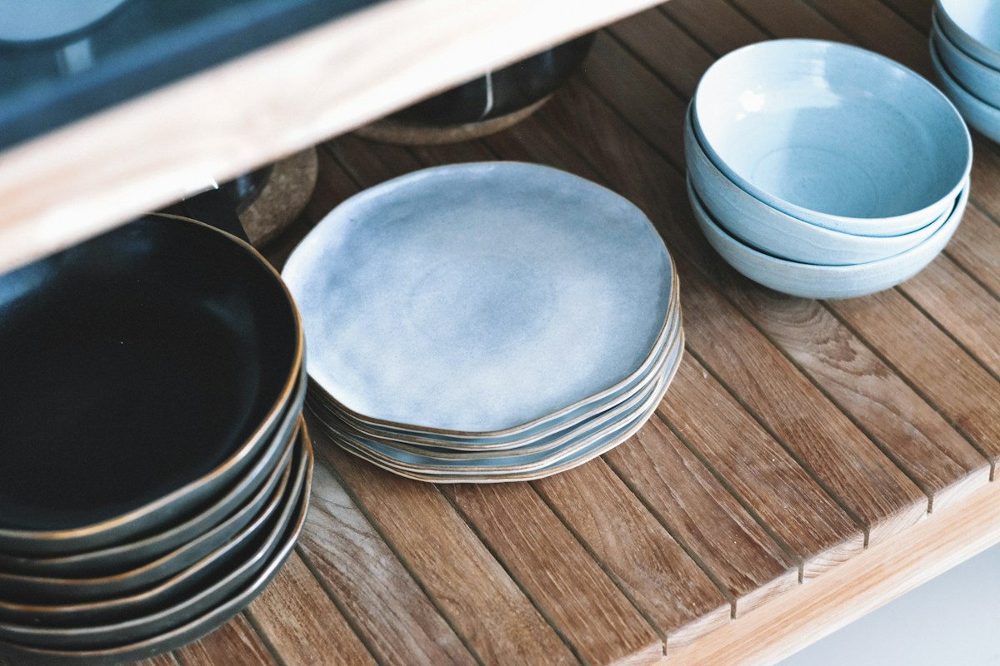
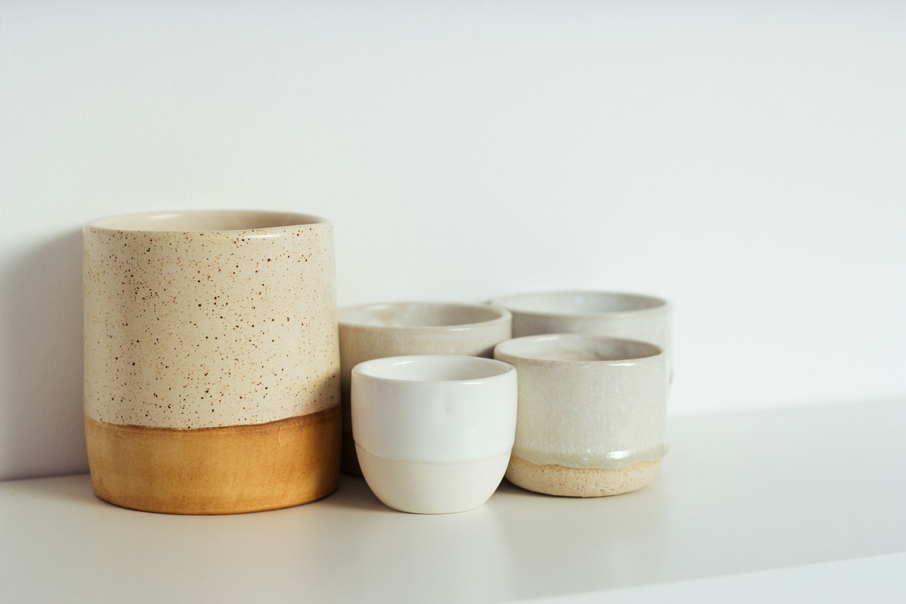
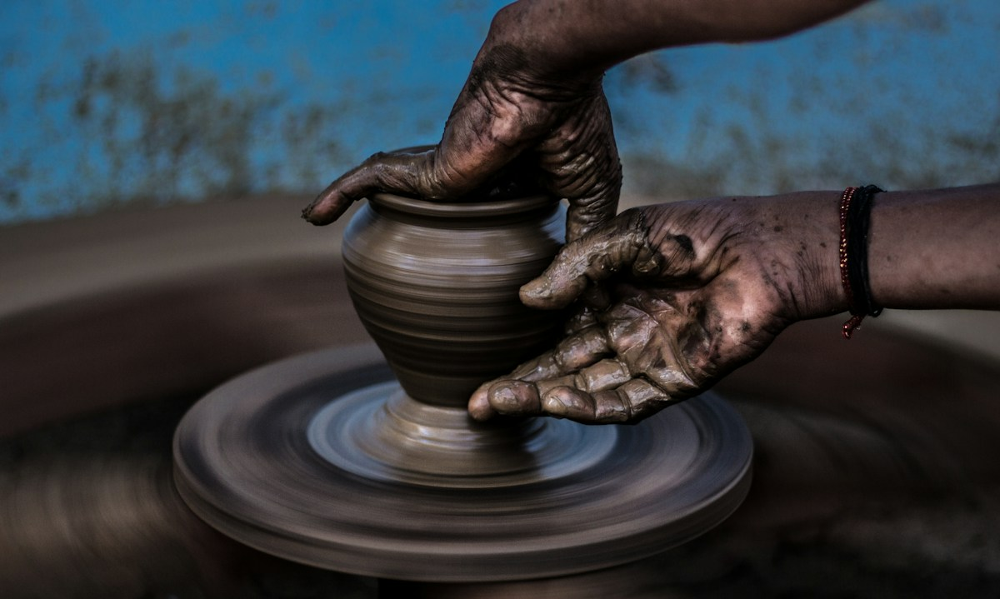

The everyday collection
Objects for the rituals you return to.
Thoughtful ceramics inspired by the rhythm of the coast, and the quiet beauty of being here.
Explore the collection
A first coffee. A shared table. Flowers gathered on the way home. LOW TIDE celebrates the little rituals that make a life feel like yours, one imperfectly beautiful object at a time.


Our imagined studio starts with a simple idea: make fewer things, with more feeling. Each form is guided by the hand, the clay, and a little bit of coastal calm.
Variations are part of the story. The mark of a thumb, a glaze that pools just so: these are the details that make an object yours.
Step inside the studioImagine a place for clay-covered hands, good conversation, and making something just for the joy of it.
Say hello